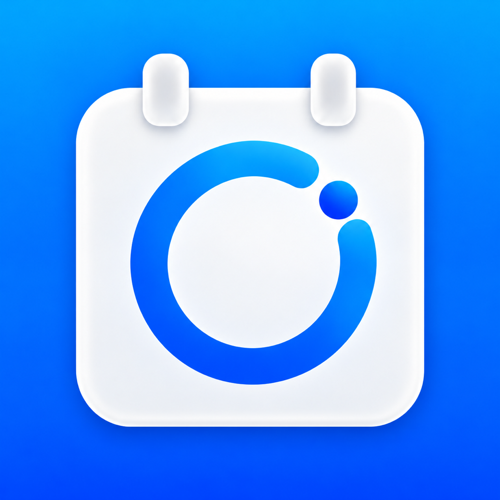

iPhone · iPad · Apple WatchRemember the Day. Prepare for It.
Count down to important days, birthdays, and anniversaries with ND Countdown. Keep reminders and preparation lists together, so every plan has a place.
Every Important Day
Track events, birthdays, and anniversaries with annual Gregorian or lunar repeats, exact times, and counts in days, years/months/days, or weekdays.
Turn Plans into Preparation
Start with birthday, travel, exam, or wedding checklists. Add due dates and reminders, and complete tasks right from Events.
Reminders That Fit Your Plans
Set one reminder per event for free, or up to eight with PRO, including anniversary milestones. Ringing alarms are also available on iOS 26 and later.
Your Days at a Glance
See important dates on Home Screen and Lock Screen widgets. PRO adds all widget styles, event list widgets, and Apple Watch access.
Make Each Day Your Own
Add photos, theme colors, custom icons, and tags. Find events by category, and share text or photo cards with the system share sheet.
Local Encryption, Optional Sync
No app account, ads, or analytics SDKs. Records are encrypted on your device; iCloud sync and App Lock are included for free.
Start Free. Upgrade When You Need More.
Free includes five unarchived events, one reminder per event, basic Home Screen and Lock Screen widgets, preparation lists, iCloud sync, and privacy features. PRO is a one-time purchase for more events, multiple and milestone reminders, all widgets, automatic calendar import, and Apple Watch. No subscription. The App Store shows your actual price.
Requires iOS / iPadOS 17 or later. Apple Watch requires watchOS 10 or later and PRO. The app currently supports Simplified Chinese and English; this website is available in five languages.
记住重要的日子，也为它做好准备。
用 ND Countdown 记录倒数日、生日和纪念日，把提醒与准备清单放在一起，让期待有条不紊。
每个重要时刻
记录倒数日、生日和纪念日，支持公历与农历年重复、精确时间，以及总天数、年月日和工作日计数。
从期待到准备
使用生日、旅行、考试或婚礼清单模板，为准备事项设置截止日期与提醒，并在首页快速完成。
按你的节奏提醒
免费版每个时刻可设 1 个提醒；PRO 最多 8 个，并支持纪念日里程碑提醒。iOS 26 及以上还可设置响铃闹钟。
抬眼就能看见
桌面和锁屏小组件展示重要日子。PRO 解锁全部组件样式、事件列表小组件与 Apple Watch。
让日子更有你的风格
添加照片、主题色、自定义图标与标签，按分类查找时刻，并通过系统分享发送文字或照片卡片。
本机加密，可选同步
无需注册应用账号，无广告、无分析 SDK。记录在本机加密保存，iCloud 同步与应用锁免费提供。
免费开始，按需升级
免费版包含 5 个未归档时刻、每个时刻 1 个提醒、基础桌面与锁屏小组件，以及准备清单、iCloud 同步和隐私保护。PRO 一次买断，解锁更多时刻、多次与里程碑提醒、全部小组件、自动导入日历和 Apple Watch，无订阅。价格以 App Store 显示为准。
支持 iOS / iPadOS 17 及以上；Apple Watch 需要 watchOS 10 及以上及 PRO。App 当前支持简体中文与英语；本网站提供五种语言。
記住重要的日子，也為它做好準備。
用 ND Countdown 記錄倒數日、生日和紀念日，將提醒與準備清單放在一起，讓期待有條不紊。
每個重要時刻
記錄倒數日、生日和紀念日，支援國曆與農曆每年重複、精確時間，以及總天數、年月日和工作日計數。
從期待到準備
使用生日、旅行、考試或婚禮清單範本，為準備事項設定截止日期與提醒，並在首頁快速完成。
依你的步調提醒
免費版每個時刻可設定 1 個提醒；PRO 最多 8 個，並支援紀念日里程碑提醒。iOS 26 以上還可設定響鈴鬧鐘。
抬眼就能看見
主畫面與鎖定畫面小工具顯示重要日子。PRO 解鎖全部小工具樣式、時刻列表小工具與 Apple Watch。
讓日子更有你的風格
加入照片、主題色、自訂圖示與標籤，依類別尋找時刻，並透過系統分享傳送文字或照片卡片。
本機加密，選擇性同步
無需註冊 App 帳號，無廣告、無分析 SDK。記錄在本機加密儲存，iCloud 同步與 App 鎖定免費提供。
免費開始，依需求升級
免費版包含 5 個未封存時刻、每個時刻 1 個提醒、基本主畫面與鎖定畫面小工具，以及準備清單、iCloud 同步和隱私保護。PRO 一次買斷，解鎖更多時刻、多次與里程碑提醒、全部小工具、自動匯入行事曆和 Apple Watch，無訂閱。價格以 App Store 顯示為準。
支援 iOS / iPadOS 17 以上；Apple Watch 需要 watchOS 10 以上及 PRO。App 目前支援簡體中文與英語；本網站提供五種語言。
소중한 날을 기억하고 준비하세요.
ND Countdown으로 중요한 날, 생일, 기념일까지 남은 시간을 확인하세요. 미리 알림과 준비 목록을 한곳에 모아 차근차근 준비할 수 있습니다.
모든 소중한 날
중요한 날, 생일, 기념일을 기록하세요. 양력·음력 연간 반복, 정확한 시간, 총 일수·년월일·평일 단위 계산을 지원합니다.
기대에서 준비까지
생일, 여행, 시험, 결혼식 준비 목록으로 시작하세요. 마감일과 미리 알림을 설정하고 첫 화면에서 바로 완료할 수 있습니다.
계획에 맞는 미리 알림
무료 버전은 일정당 미리 알림 1개를 제공합니다. PRO는 최대 8개와 기념일의 누적 일수 알림을 지원합니다. iOS 26 이상에서는 소리 나는 알람도 설정할 수 있습니다.
소중한 날을 한눈에
홈 화면과 잠금 화면 위젯에서 중요한 날짜를 확인하세요. PRO는 모든 위젯 스타일, 일정 목록 위젯, Apple Watch를 제공합니다.
나만의 방식으로 기록
사진, 테마 색상, 사용자 지정 아이콘과 태그를 추가하세요. 카테고리별로 일정을 찾고 시스템 공유 기능으로 텍스트나 사진 카드를 보내세요.
기기 내 암호화, 선택적 동기화
앱 계정, 광고, 분석 SDK가 없습니다. 기록은 기기에서 암호화되며 iCloud 동기화와 앱 잠금은 무료입니다.
무료로 시작하고 필요할 때 업그레이드하세요.
무료 버전은 보관하지 않은 일정 5개, 일정당 미리 알림 1개, 기본 홈·잠금 화면 위젯, 준비 목록, iCloud 동기화, 개인정보 보호 기능을 제공합니다. PRO는 한 번 구매로 더 많은 일정, 여러 미리 알림과 누적 일수 알림, 모든 위젯, 캘린더 자동 가져오기, Apple Watch를 이용할 수 있습니다. 구독은 없으며 실제 가격은 App Store에 표시됩니다.
iOS / iPadOS 17 이상이 필요합니다. Apple Watch는 watchOS 10 이상과 PRO가 필요합니다. 앱은 현재 중국어 간체와 영어를 지원하며 이 웹사이트는 5개 언어를 제공합니다.
大切な日を覚えて、準備する。
ND Countdown で、大切な日、誕生日、記念日までの時間を記録。通知と準備リストをひとつにまとめて、楽しみな日を落ち着いて迎えましょう。
すべての大切な日に
イベント、誕生日、記念日を記録。西暦・旧暦での毎年の繰り返し、時刻指定、総日数・年月日・平日単位のカウントに対応します。
楽しみを準備につなげる
誕生日、旅行、試験、結婚式の準備リストから始められます。期限や通知を設定し、最初の画面からすぐに完了できます。
予定に合わせた通知
無料版はイベントごとに通知を 1 件設定できます。PRO は最大 8 件と記念日の節目の日数の通知に対応。iOS 26 以降では音の鳴るアラームも設定できます。
大切な日をひと目で
ホーム画面とロック画面のウィジェットで大切な日を確認。PRO ではすべてのスタイル、イベント一覧ウィジェット、Apple Watch を利用できます。
自分らしく記録
写真、テーマカラー、カスタムアイコン、タグを追加。カテゴリでイベントを探し、システムの共有機能でテキストや写真カードを送れます。
端末内で暗号化、同期は任意
アプリ用アカウント、広告、分析 SDK は不要です。記録は端末内で暗号化され、iCloud 同期とアプリロックは無料で使えます。
無料で始めて、必要に応じてアップグレード。
無料版には未アーカイブのイベント 5 件、イベントごとに通知 1 件、基本のホーム画面・ロック画面ウィジェット、準備リスト、iCloud 同期、プライバシー機能が含まれます。PRO は買い切りで、より多くのイベント、複数の通知と節目の日数の通知、すべてのウィジェット、カレンダー自動読み込み、Apple Watch を利用できます。サブスクリプションはありません。実際の価格は App Store に表示されます。
iOS / iPadOS 17 以降が必要です。Apple Watch は watchOS 10 以降と PRO が必要です。アプリは現在、簡体字中国語と英語に対応し、本サイトは 5 言語で提供しています。